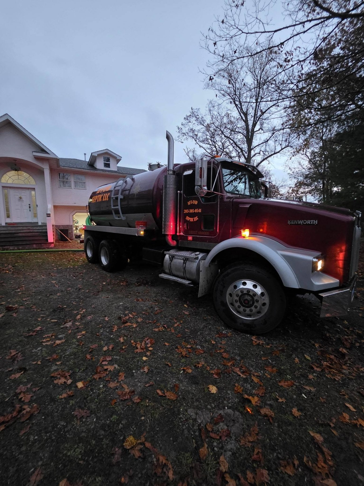
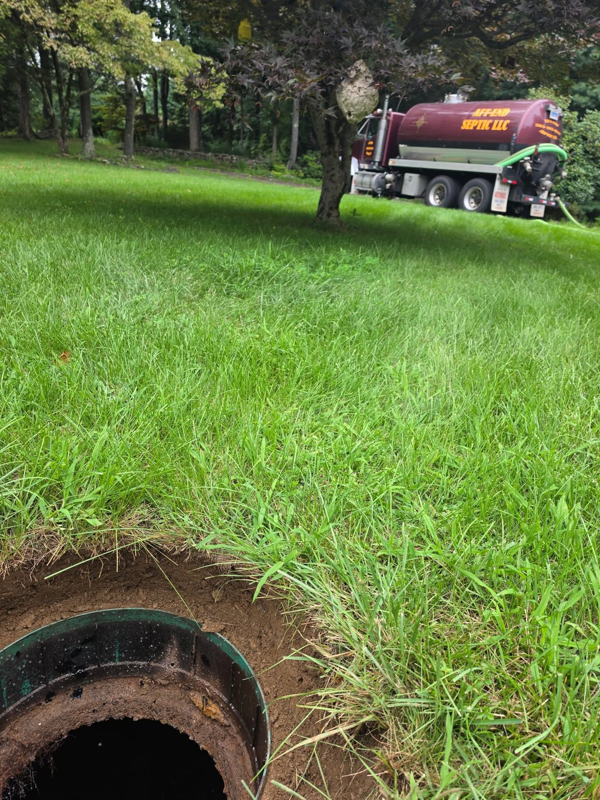
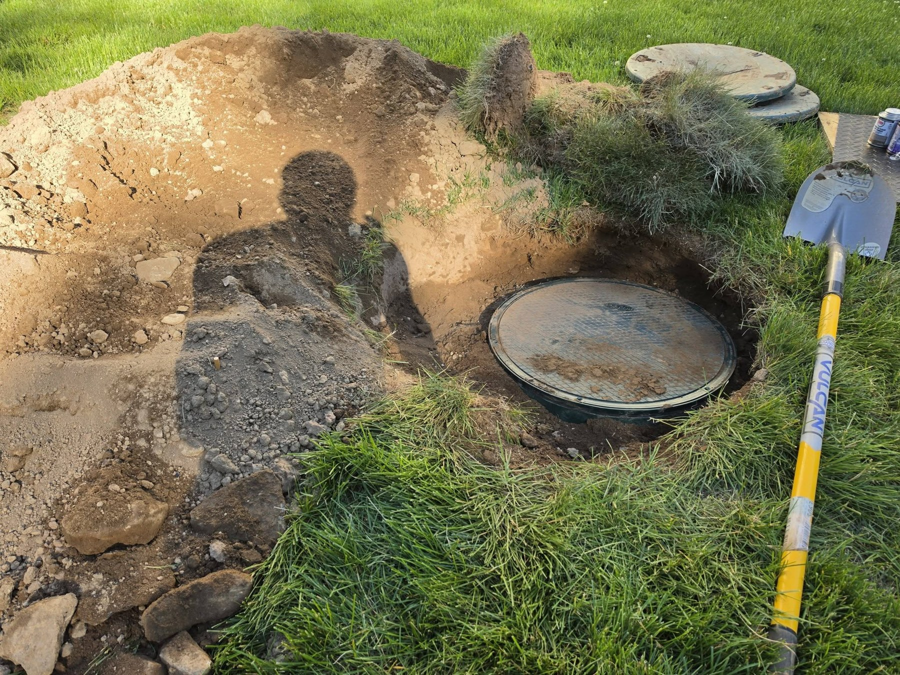
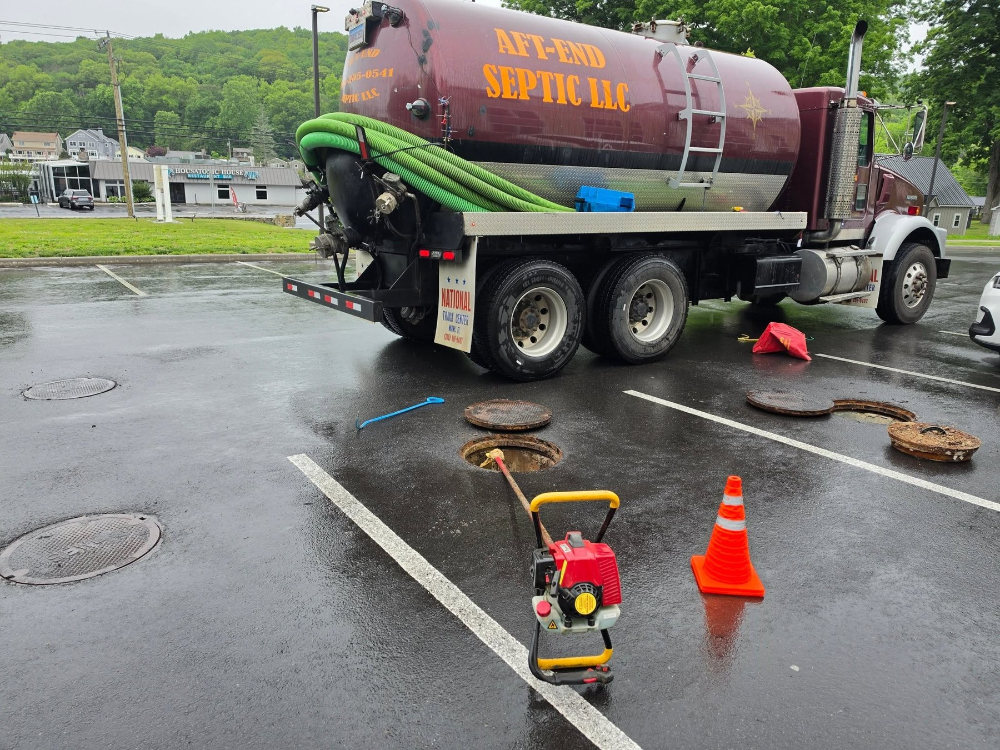
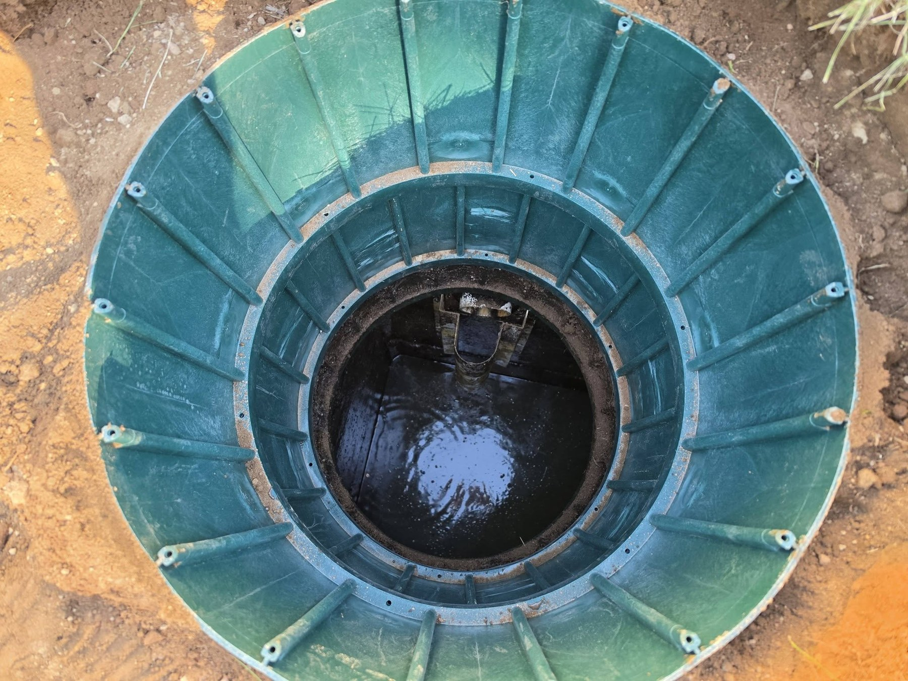

Septic Pumping
Routine pumping helps remove accumulated solids and supports the ongoing care of your septic system.
Request pumping →Septic service you can count on — honest communication, knowledgeable care and respect for your property from start to finish.



Aft-End Septic LLC is a family-owned business led by Kevin Mello Jr., bringing more than 17 years of hands-on experience to every job.
Based in Ansonia, Connecticut, Kevin believes customers deserve clear answers, careful work and a service professional who treats their property with the same respect he would expect at his own home.
From routine septic pumping to inspections and system cleaning, our goal is simple: help you understand your system and keep it working as it should.
Talk with Kevin →Practical, professional service to help protect your septic system and your property.
Routine pumping helps remove accumulated solids and supports the ongoing care of your septic system.
Request pumping →Get a closer look at your system's condition with an inspection and straightforward information about what is found.
Ask about an inspection →Professional cleaning to help maintain your system and keep up with its service needs.
Discuss your system →Not sure which service you need? Call Kevin and describe what is happening. We'll help you understand the next step.

We take pride in doing the job thoughtfully and leaving your property with the care it deserves.
Speak with Kevin ↗Call or send a request and tell us a little about your septic service needs.
We'll discuss the property, the service you're looking for and the next steps.
Kevin arrives ready to work, with a focus on professionalism and respect for your home.
Based in Ansonia, Aft-End Septic serves communities throughout New Haven and Fairfield counties.
Don't see your town? Give us a call. We'll be happy to discuss your location and service needs.
Check your service areaWe're grateful when customers take the time to share their experience.
“Highly recommend Aft-End Septic. Not only was the cost very reasonable, but Kevin was extremely knowledgeable and professional.”
“Great company, hard worker and fair pricing!”
Call Kevin directly or send a quick request. We'll be glad to hear from you.
Share a few details and we'll help you take the next step.
